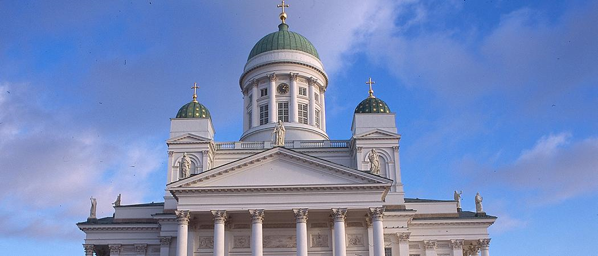
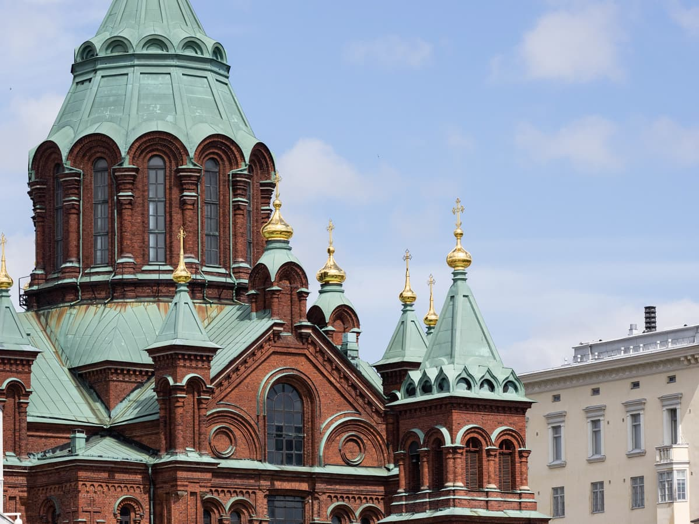
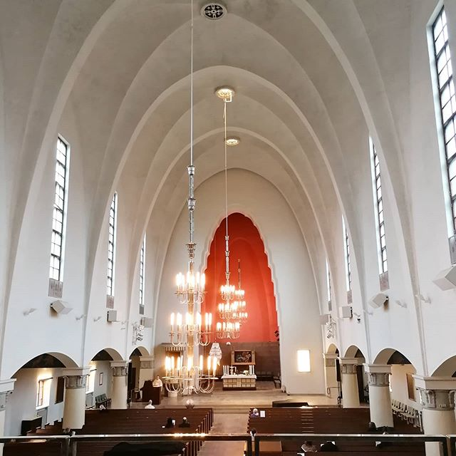

Kirkot
Tuomiokirkko
"Tuomiokirkon ensimmäiset luonnokset valmistuivat jo vuonna 1818, mutta kirkko vihittiin vasta 1852. Se sai nimekseen Nikolainkirkko rakennushankkeen aloittaneen Venäjän tsaari Nikolai I:n ja Pyhän Nikolauksen mukaan. Helsingin hiippakunta perustettiin vuonna 1959, ja silloin nimi muuttui Helsingin tuomiokirkoksi."
Katso täältä lisää!Uspenskin katedraali
"Vuonna 1868 valmistunut Uspenskin katedraali Katajanokalla on Länsi- Euroopan suurin ortodoksinen kirkko. Kultakupolinen ja punatiilinen rakennus on yksi näkyvimpiä merkkejä Venäjän vaikutuksesta Suomen historiassa."
Katso täältä lisää!Saksalainen kirkko

"Saksalainen kirkko valmistui vuonna 1864. Suunnittelijoina olivat Harald Bosse ja C.J. von Heideken. Arkkitehtuuri edustaa uusgotiikkaa ja se on muodoltaan pitkäkirkko."
Katso täältä lisää!Pyhän Henrikin katedraali

"Pyhän Henrikin katedraali on maamme vanhimpia uusgoottilaisia kirkkoja. Sen on suunnitellut Suomen intendenttikonttorin saksalaissyntyinen yliarkkitehti Ernst Bernhard Lohrmann (1803-1870)."
Katso täältä lisää!Mikael Agricolan kirkko
"Lars Sonckin suunnittelema kirkko vihittiin käyttöön keväällä 1935. Sodan aikana eteläisen Helsingin maamerkiksi muodostunut, 103 metrin korkeuteen kohoava ja kauas merelle näkyvä kirkon torni osoittautui riskiksi. Kirkontornin jatkona nouseva 30-metrinen piikkimäinen yläosa laskettiin tornin sisään, jotta se ei olisi palvellut vihollislentäjiä suunnistuspisteenä."
Katso täältä lisää!Johanneksen kirkko

"Johanneksen kirkko rakennettiin Punanotkon kukkulalle, silloisen kaupungin laitamille. Kirkko valmistui vuonna 1891. Sen suunnitteli tukholmalainen arkkitehti Adolf Emil Melander. "
Katso täältä lisää!